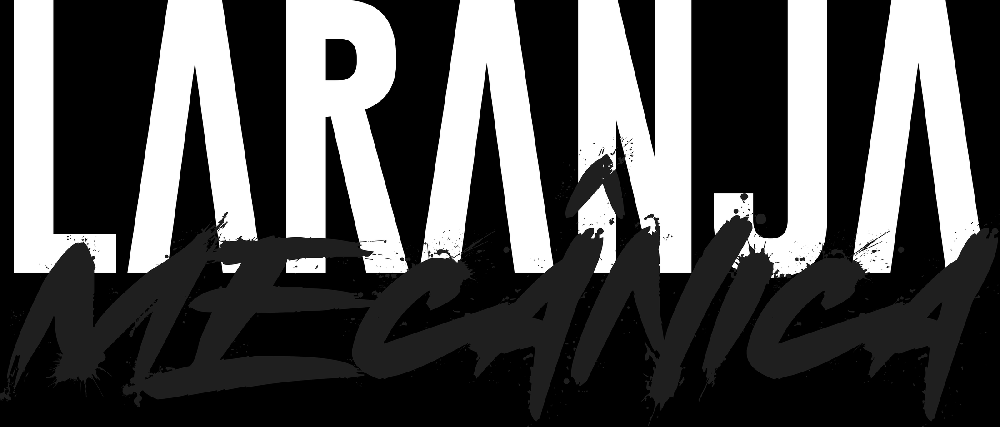

A história do manto laranja
Sobre o clube
e nossa história.
O Orange Futebol Clube Recife nasceu da vontade de oferecer um caminho de aprendizado e evolução por meio do futebol. Inspirado pela criatividade e pelo jogo coletivo da Laranja Mecânica, o clube constrói sua identidade unindo uma ideia de jogo à maneira de ensinar, competir e conviver.

Símbolo
O que carrega o nosso escudo
Nosso escudo une o amor por Recife à influência holandesa que inspira o Orange. O leão conecta essas duas raízes: de um lado, o Leão Holandês; do outro, a força de Pernambuco, o Leão do Norte.
Sua estrutura faz referência ao Marco Zero do Recife, lugar de encontros, história e pertencimento. O laranja completa essa identidade, trazendo a inspiração do futebol holandês para uma marca que carrega o orgulho da nossa terra.
Vestir esse escudo é levar Recife ao peito, com coragem para construir nossa própria história.

Torcer pelo Orange é acompanhar, incentivar e participar. Nossa força vem das famílias, dos amigos e de todos que apoiam os atletas em cada desafio, celebrando as conquistas e respeitando o processo de desenvolvimento.
Queremos que esse apoio seja reconhecido pelo entusiasmo e pelo respeito aos atletas, aos adversários e à arbitragem. A paixão pela camisa nos aproxima e fortalece o sentimento de fazer parte da família Orange.
O que nos move
Missão, visão e valores
Missão
Promover a formação esportiva e humana por meio do futebol, desenvolvendo habilidades, compreensão do jogo, autonomia e cooperação em um ambiente de aprendizado e respeito, com a participação das famílias.
Visão
Ser referência na formação de atletas em Pernambuco, reconhecido pela qualidade do ensino, pela organização e pela relação de confiança com as famílias.
Valores
Família, Transparência, Mérito e Respeito. Valorizamos a parceria com os responsáveis, a clareza na comunicação, o reconhecimento da dedicação e da evolução e o cuidado com cada pessoa que participa do nosso projeto.